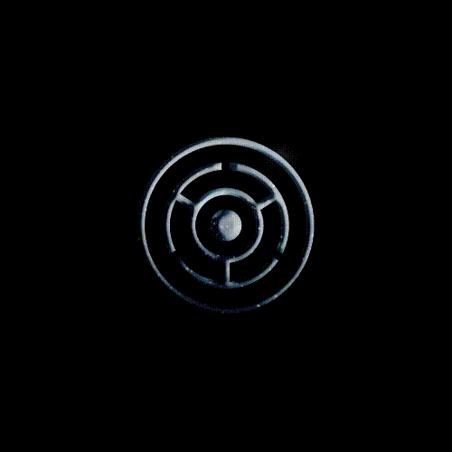

It is.
It is everything.
It is everything.
One center,
one vision, one law, one light.
one vision, one law, one light.
All our bodies are free, upon the birth of a new world—behold the New Earth.
We call it the miracle of life. Now we have a name for it.
We wait for a revelation with our eyes turned skyward.
It seems today we are stepping into a new era. Something new has taken root in the world. There is a revelation in the dreams that will change humanity in every single shape. These particles are moving so slowly but, at the same time, so fast. Everything in this new dimension is dark and deep, but there is also something beautiful and unique about it.
Under new conditions, every particle, every shape, every body will transform. All ideals will be reformulated. This is a new state of evolution. Humanity will be decentralised from the structures it once dominated, from knowledge and science, from culture and faith, denying mankind as the center of the universe and as the last state of evolution, relegating organised beliefs that perpetuate structures of power and dominance, challenging the anthropomorphic dogmas, as well as the creationist emergence of humanity.
Under new conditions, every particle, every shape, every body will transform. All ideals will be reformulated. This is a new state of evolution. Humanity will be decentralised from the structures it once dominated, from knowledge and science, from culture and faith, denying mankind as the center of the universe and as the last state of evolution, relegating organised beliefs that perpetuate structures of power and dominance, challenging the anthropomorphic dogmas, as well as the creationist emergence of humanity.
Everything that rises must converge towards the Eyes of the Posthuman. It is a new state of evolution—beyond humanity itself. Our Vision and ever-present dreams, all bright, our transforming bodies converging towards a new dimension. Our Eyes turned to the firmament, ready to reflect all the stars, and every drop of water, and the birth of the Posthuman. Behold our bodies ever connected to The Center. Behold our words absorbed by the edge of the Universe.
From now on, this is our new reality. We are heading towards a new tireless force upon the Earth, and we are going to be a part of it.